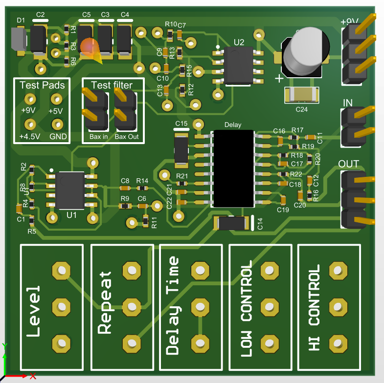
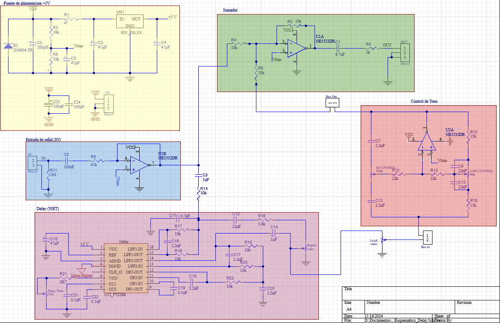
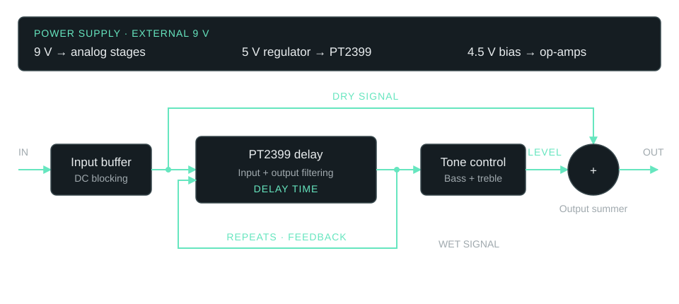
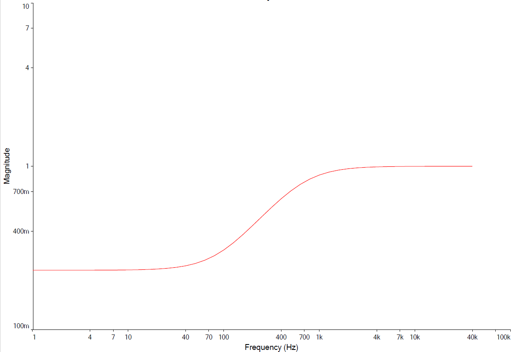
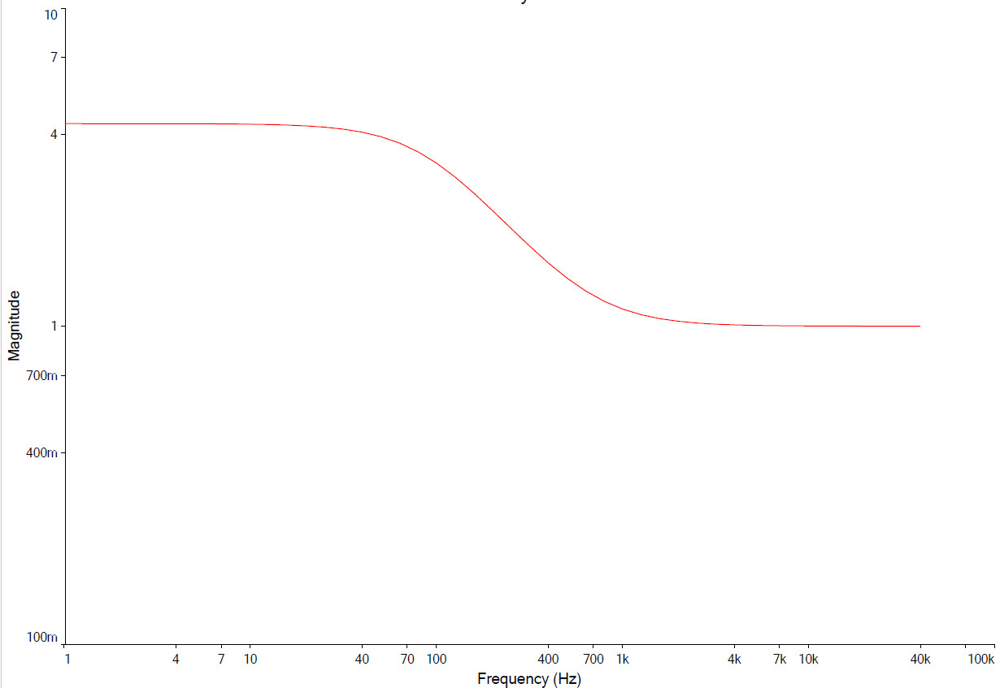
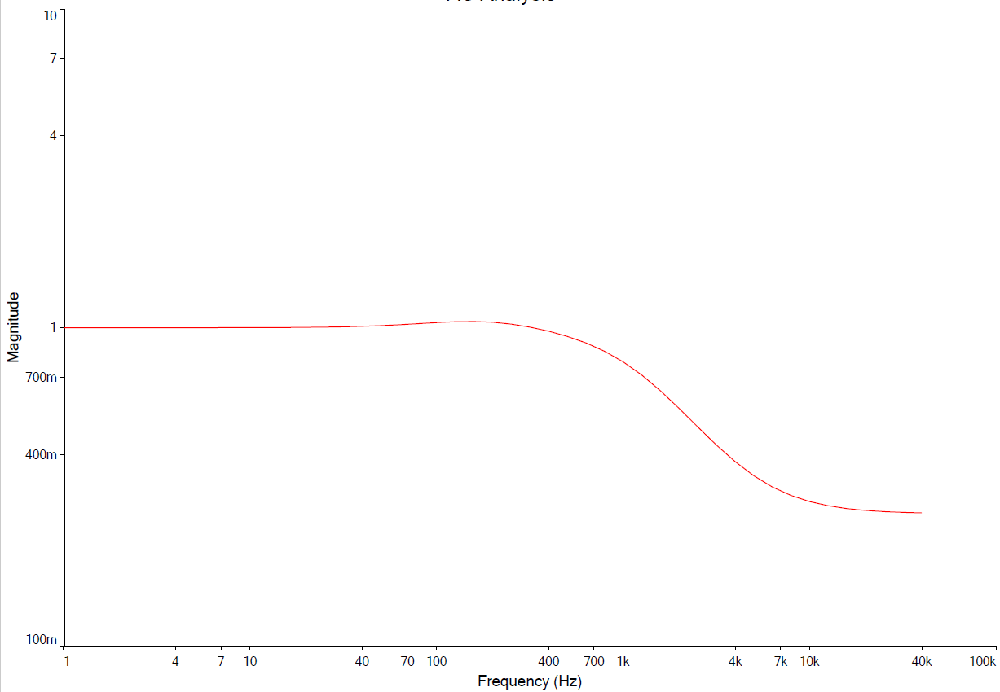
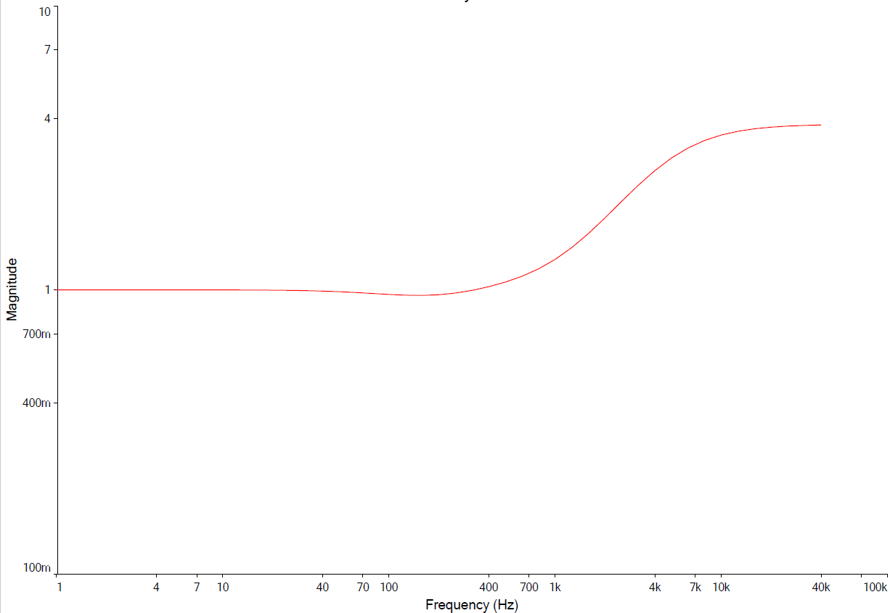
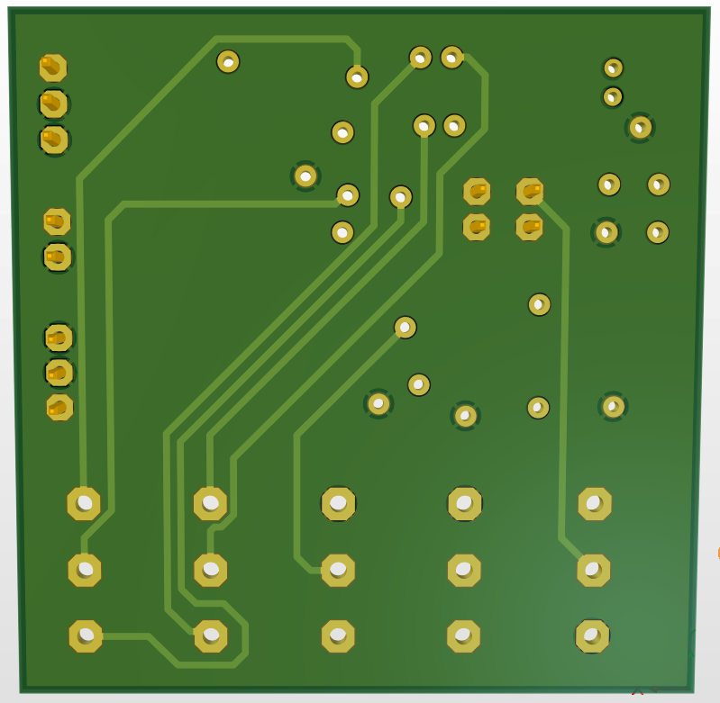
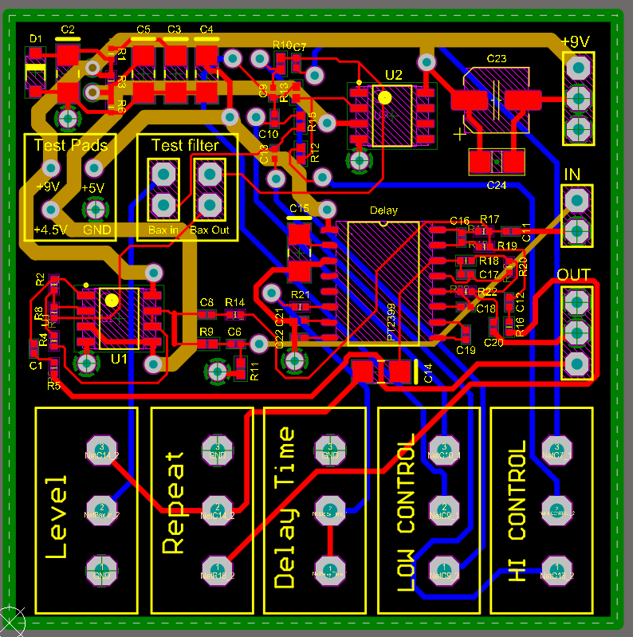
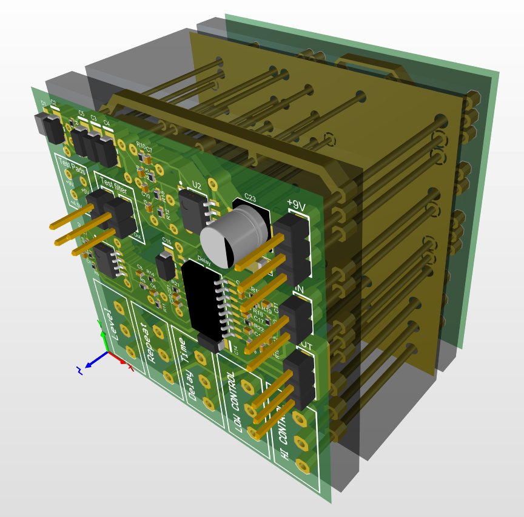

03 / Audio electronics
Circuit simulation & PCB design · 2024
Digital Delay Pedal
Building the harmonic tremolo made me want to keep designing guitar effects. A delay pedal was a natural next step: a new effect, with circuit simulation and PCB design added to the process.

- Year
- 2024
- Team
- Juan Aldrey Alurralde
Leonardo Sandez - Format
- Circuit + PCB design
- Platform
- PT2399
Altium Designer
Overview
01A new effect, a broader design process
The harmonic tremolo gave me hands-on experience with assembly, testing, and experimental adjustments. I enjoyed that work enough to take on another guitar effect and explore the tools needed to develop a circuit into a compact printed circuit board.
This project was developed with Leonardo Sandez for Electronic Circuits II at UNTREF. We designed a delay with adjustable delay time, repeats, wet-signal level, and bass and treble controls. The work covered circuit analysis, frequency-response simulation, and a four-layer PCB layout in Altium.
The PT2399 handles the digital delay, while the surrounding analog stages condition, filter, and mix the signal. The result documented here is a circuit and PCB design, with simulated responses and 3D board views.

Circuit architecture
Two paths, one delay

Simulation
03Checking how the circuit shapes the sound
The filter and tone-control circuit was simulated to verify its frequency response before moving to the PCB layout. Sweeping the bass and treble controls showed how the circuit would shape the delayed signal.
These four responses show the controls at their boost and cut extremes. The detailed calculations and component values are included in the report.




PCB design
04From schematic to a 5 × 5 cm board
The circuit was laid out in Altium as a compact, four-layer, 5 × 5 cm PCB with surface-mount components. Signal routing, ground and supply planes, and test points were brought together in one board design.
The 2D layout and 3D views made component placement and the board structure easier to inspect, extending the design process beyond the schematic.



Full documentation
Full technical report
The English report covers circuit stages, filter calculations, tone-control simulations, and the PCB design.